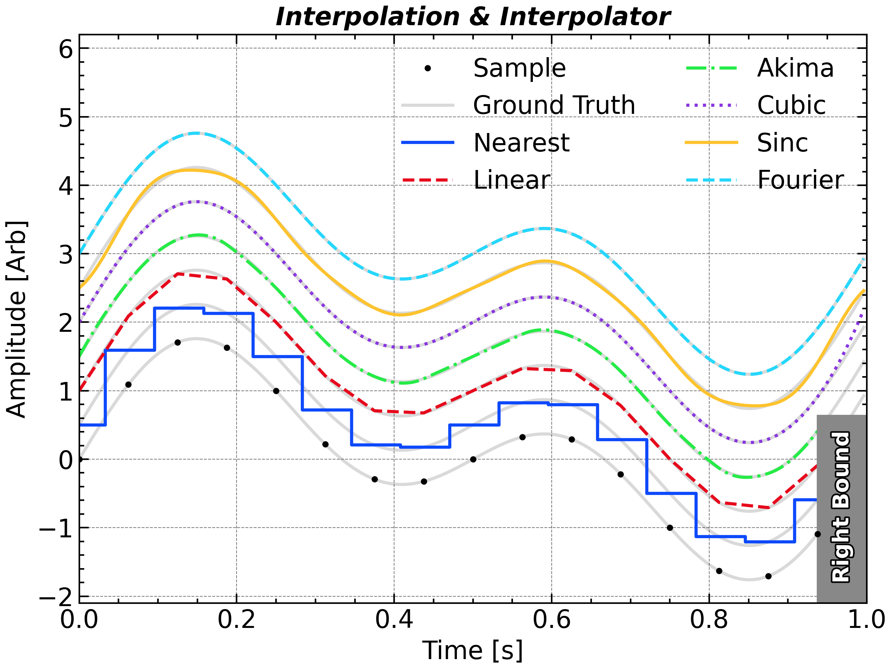
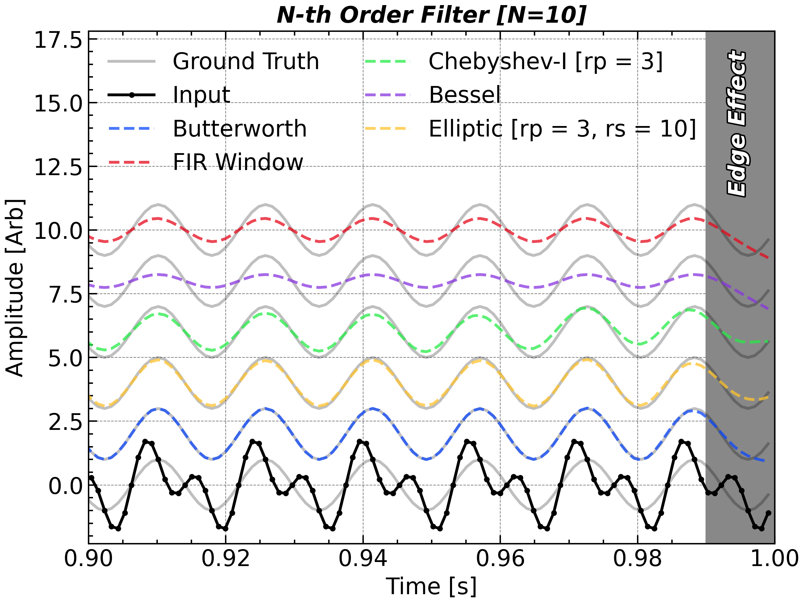
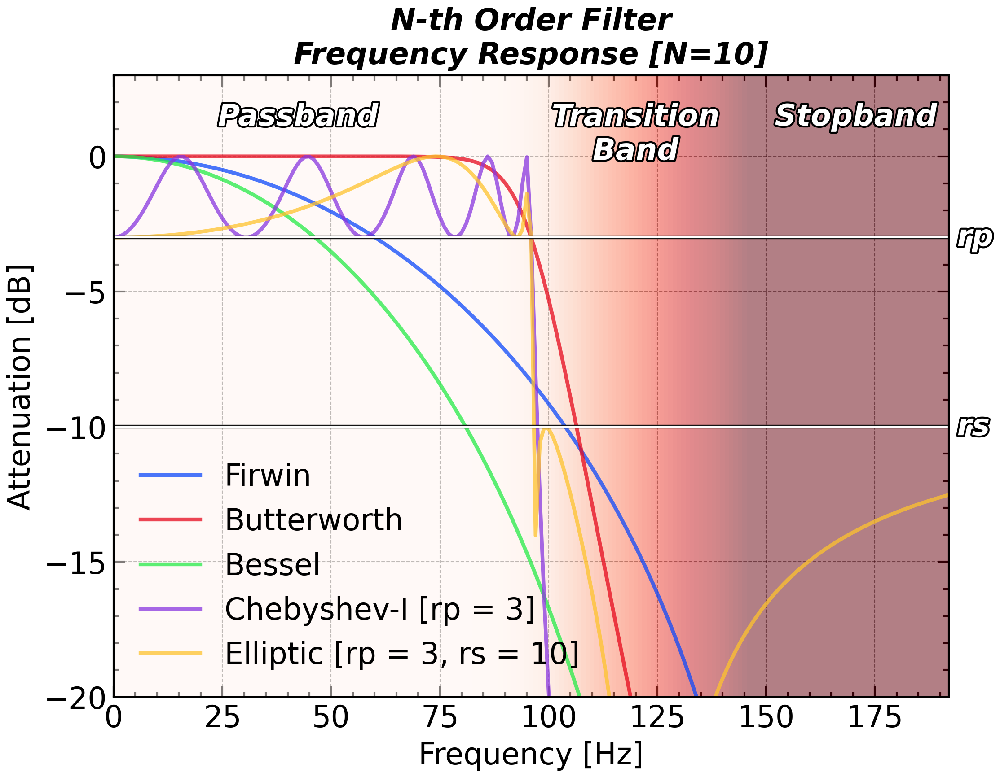
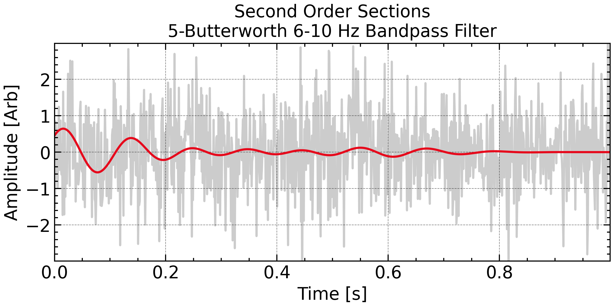
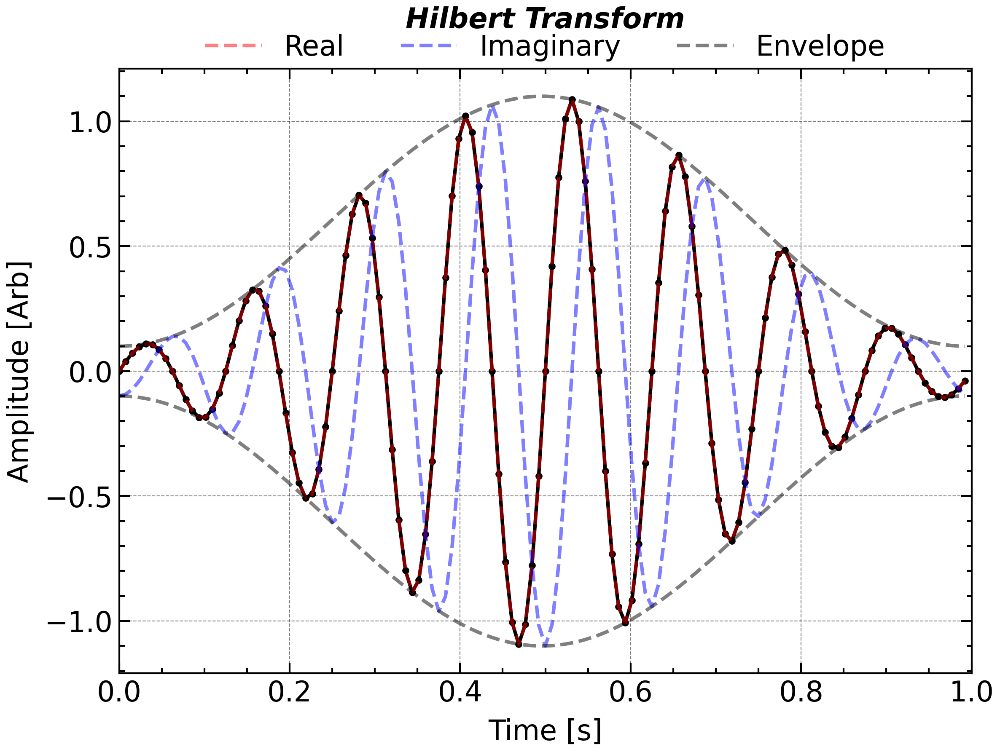

Processing of the signal
Reconstruction and Interpolation [scipy.interpolate]
Interpolation is the process of estimating unknown values between discrete data points. In scientific data analysis, especially in signal processing and time series studies, interpolation plays a vital role in resampling, aligning datasets, filling gaps, and reconstructing higher-resolution signals from coarse measurements.
The choice of interpolation method can significantly affect the quality of the reconstructed signal, particularly in terms of smoothness, fidelity to the original data, and preservation of frequency content. Below is a summary of common interpolation methods, their implementations in SciPy, and their respective advantages and caveats:
| Method | SciPy / API | Pros | Caveats |
|---|---|---|---|
| Nearest neighbor | interp1d(kind='nearest') |
Extremely fast; trivial to use | Step artifacts; strong spectral distortion; not smooth |
| Linear | interp1d(kind='linear') |
Robust; no overshoot; simple and predictable | Not smooth at knots; attenuates high frequencies |
| Cubic spline | CubicSpline(bc_type=...) |
Very smooth (C²); configurable boundaries | Overshoot/ringing near discontinuities; needs strictly increasing x |
| Akima piecewise | Akima1DInterpolator |
Reduces overshoot; robust to local outliers/kinks | Only C¹; slower than linear; not globally optimal |
| Fourier (freq-domain) | scipy.signal.resample |
Preserves spectrum for band-limited signals; great for upsampling | Requires uniform sampling & quasi-periodicity; wrap-around artifacts if not tapered |
| Ideal sinc (windowed) | custom (windowed sinc) |
Theoretical best under sampling theorem; highest spectral fidelity | Infinite kernel → truncation/window needed; computationally heavy; uniform sampling only |

Different interpolation methods applied to a two frequencies (1.1 Hz and 2.2 Hz) signal.
Particularly, the \mathrm{sinc} interpolation is the most intutive way for the reconstruction of a band-limited signal, as it do not contribute any frequency component beyond the Nyquist frequency. It is defined as: x(t) = \sum_{n=-\infty}^{+\infty} x[n]\, \mathrm{sinc}\left(\frac{t - n\delta t}{\delta t}\right) where \delta t=1/f_s is the sampling interval, and \mathrm{sinc}(x) = {\sin(\pi x)}/{\pi x}.
A practical implementation of \mathrm{sinc} interpolation in Python/Numpy is as follows:
def sinc_interp(t_interp, sig, t):
dt = t[1] - t[0]
weight = np.sinc((t_interp[:, None] - t[None, :]) / dt)
return weight @ sig
sinc_interp(t_interp, sig, t)There is no a universal best interpolation method. The choice depends on the specific application, data characteristics, and computational constraints. For example, if you need a quick and dirty upsampling for visualization, linear interpolation might suffice. If you are reconstructing a smooth physical signal from noisy measurements, cubic splines or Akima interpolation could be better. For resampling band-limited signals, Fourier-based methods or sinc interpolation are preferred.
Filter Circuit


Different interpolation methods applied to a two frequencies (1.1 Hz and 2.2 Hz) signal.
Digital Filter [scipy.interpolate]
Digital filters are fundamental tools for shaping, extracting, or suppressing specific features in time series data. The anti-aliasing is also a common application, where filters are used to prevent high-frequency components from distorting the signal before downsampling.
Digital filters are divided into two main types:
Finite Impulse Response (FIR): The output depends only on the current and a finite number of past input samples. FIR filters are always stable and can have exactly linear phase. A general FIR digital filter is implemented as: y[n] = \sum_{m=0}^{L} h[m]\, x[n-m]
- x[n], y[n]: Input, Output signal
- h[m]: Filter coefficients (impulse response), length L+1
- L: Filter order
Infinite Impulse Response (IIR): The output depends on both current and past input samples and past outputs. IIR filters can achieve sharp cutoffs with fewer coefficients, but may be unstable and generally do not preserve linear phase. A general IIR filter has both input and output recursion: y[n] = \sum_{p=0}^{L} b[p]\, x[n-p] - \sum_{q=1}^{M} a[q]\, y[n-q]
- b[p]: Feedforward (input) coefficients
- a[q]: Feedback (output) coefficients, usually a[0] = 1
- L, M: Orders for input and output
The FIR filter can be explicitly written as a convolution with the filter coefficients, h[k], as the kernel. The IIR filter involves feedback, making it recursive and more complex to analyze, but is still possible to express as an infinite series of convolutions, implicitly.
Moving Average as an FIR Filter
The moving average filter is actually a simple FIR filter. For a window length L, the coefficients are: h[k] = \frac{1}{L},\quad k = 0, 1, \ldots, L-1 So the output is: y[n] = \frac{1}{L} \sum_{k=0}^{L-1} x[n-k] That is, the output is the average of the most recent L input samples. Therefore, the moving average filter is an FIR filter whose coefficients are all equal.

Sine waves with white noise and its moving average [L = 20].
The output y[n] is the average of x[m] between m=n-L+1 and m=n. Therefore, the outputis delayed by about L/2 samples compared to the input. This delay is called phase shift of the filter. As the linear filter is essentially a convolution, its influence on the frequency content of the signal can be analyzed in the frequency domain. A filter has frequency response \mathcal{F}\{h[t]\}=H(k)=|H(k)|e^{j\phi(k)}, where |H| controls amplitude and \phi(\omega) is the phase shift.
For multi-frequency signals, the phase response \phi(\omega) shapes how different components are time-shifted, which can preserve or distort waveform shape.
- Linear phase. If \phi(\omega)=-\omega\tau_0 (a straight line), then the group delay \tau_g(\omega)=-\tfrac{d\phi}{d\omega}=\tau_0 is constant: every frequency is delayed by the same \tau_0. Waveforms are not distorted—only shifted in time. Real, symmetric FIR filters achieve this; the delay equals (N-1)/2 samples.
- Nonlinear phase. When \tau_g(\omega) varies with \omega, different frequencies experience different delays, causing dispersion (e.g., edge smearing, ringing). Most IIR filters (Butterworth, Chebyshev, elliptic) have nonlinear phase; Bessel IIRs trade selectivity for flatter group delay.
To get the correct timing, you may need to shift the output back by L/2 samples. Equivalently, you can use a centered moving average to avoid phase distortion: y[n]= \frac{1}{2M + 1} \sum_{k=-M}^{M} x[n-k] Such a filter not only has the input in the past (i.e., x[n-M],\ x[n-M+1],\ ...,\ x[n-1]) but also in the future (i.e., x[n+1],\ x[n+2],\ ...,\ x[n+M]). This is a non-causal filter, which cannot be implemented in real-time systems but is acceptable for offline processing. Conversely, a causal filter only uses past and present inputs.
Alternatively, you can apply the filter twice, once forward and once backward in time, to achieve zero-phase filtering. This is implemented in scipy.signal.filtfilt.
Implementing Digital Filters in scipy.signal
Filter representations in scipy.signal:
BA (transfer-function coefficients)
Numerator/denominator polynomials (b, a) of H(z)=\frac{B(z)}{A(z)} [See Z-transform for explanation].
Pros: Simple, widely used; works for FIR (
a=[1]) and IIR.Cons: Can be numerically unstable for high-order IIR (coefficient sensitivity).
Get/Use:
scipy.signal.butter(..., output='ba'); apply withscipy.signal.lfilter(b, a, x)(once, forward) orscipy.signal.filtfilt(b, a, x).
ZPK (zeros–poles–gain)
Factorized form (z, p, k) describing zeros, poles, overall gain.
Pros: Great for analysis (stability, sensitivity); easy to modify poles/zeros.
Cons: Still not the most stable for applying high-order IIR directly.
Get/Convert:
scipy.signal.butter(..., output='zpk'); convert viascipy.signal.zpk2tf,scipy.signal.zpk2sos.
SOS (second-order sections, suggested)
- Cascade of bi-quads; array of sections with 6 parameters each.
- Pros: Most numerically stable for high-order IIR; production-friendly.
- Cons: Slightly more verbose; must convert at design time.
- Get/Use:
scipy.signal.butter(..., output='sos'); apply withscipy.signal.sosfilt(sos, x)orscipy.signal.sosfiltfilt(sos, x).
Common Filter Types
The following table summarizes common digital filter types, their implementations in scipy.signal, main features, and typical use cases:
| Filter Type | Function (scipy.signal) |
Main Features | Use Case |
|---|---|---|---|
| FIR (window) | firwin, firwin2 |
Stable, linear phase | Smoothing, band selection |
| Butterworth | butter |
Smooth, monotonic response | General purpose |
| Chebyshev I/II | cheby1, cheby2 |
Sharper cutoff, ripples | Strong suppression |
| Elliptic | ellip |
Fastest cutoff, both ripples | Selective, small band |
| Bessel | bessel |
Linear phase, slow rolloff | Transient preservation |
| Median | medfilt, medfilt1d |
Nonlinear, preserves edges | Spike removal |
For IIR filters, the Butterworth filter, scipy.signal.butter, is commonly used. An example of these filters applied to a sine wave is shown below:

Please note that filtering can introduce edge effects, so always inspect the beginning and end of the filtered signal.
Frequency Response and Interpretation
The effect of a digital filter can be fully characterized by its frequency response, i.e., how it amplifies or suppresses each frequency. Use scipy.signal.freqz to plot the amplitude and phase response of your filter, and check that it matches your physical requirements (e.g., minimal ripple in the passband, sufficient attenuation in the stopband).

Artifacts from Over-narrow Filters
It is not suggested to apply a filter with an over-narrow bandwidth unless you are already confident about the central frequency and waveform of the signal. Like, if you apply a 5-Butterworth 6-10 Hz bandpass filter to a pure white noise, you are going to get a filtered signal that looks like a sine wave with a frequency around 8 Hz. Thus, you are introducing artificial waves into the signal.

Hilbert Transform [scipy.signal.hilbert]
The Hilbert transform is a fundamental tool for analyzing the instantaneous amplitude and phase of a signal. By constructing the analytic signal, it enables us to extract the envelope and instantaneous frequency, which are essential in the study of modulated waves and transient phenomena. This section demonstrates how to implement the Hilbert transform in Python and interpret its results in both physical and engineering contexts.

signal_ht = scipy.signal.hilbert(signal)
signal_ht.real, sighal_ht.imag, np.abs(signal_ht)
# The real, imaginary part and the envelope